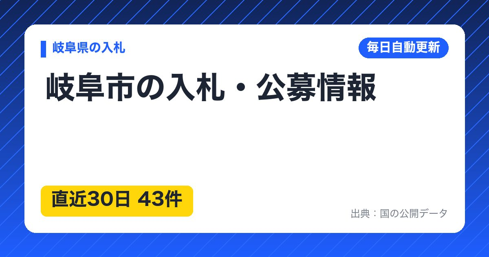

東海の入札まとめ
›
岐阜県
岐阜市の入札・公募情報【毎日更新】

岐阜県岐阜市の入札情報（市役所の工事の入札予定＋国の機関などの公告）
広告
入札参加・技術者の配置に：
・
施工管理技士の受験対策 通信講座（独学サポート事務局）
（1級・2級の土木・建築・電気・管工事に対応）
工事
11月17日 水道施設 81 長良福光ほか配水管布設替工事
岐阜県岐阜市｜公告 2026-11-17
工事
11月17日 舗装 1832 道路舗装工事（岐阜市萱場東町8丁目ほか2地内）
岐阜県岐阜市｜公告 2026-11-17
工事
11月16日 舗装 1827 道路舗装工事（区画道路2号）
岐阜県岐阜市｜公告 2026-11-16
その他
内部事務系システムの次期システム更新に関する情報提供依頼（RFI）
岐阜県岐阜市｜公告 2026-11-13
その他
ウサギ及びラットを用いた毒性試験 一式
国立大学法人東海国立大学機構岐阜大学｜公告 2026-11-13
工事
11月12日 舗装 1828 道路舗装工事（岐阜市長良福光ほか4地内）
岐阜県岐阜市｜公告 2026-11-12
その他
ナースカート 100式
国立大学法人東海国立大学機構岐阜大学｜公告 2026-11-12
その他
一般事務機器用トナーカートリッジ等 一式
法務省岐阜地方法務局｜公告 2026-11-11
その他
11月11日 機械器具 80 北部プラント1号焼却炉排ガス伸縮継手修繕
岐阜県岐阜市｜公告 2026-11-11
工事
11月11日 土木 1819 道路改良工事（長森133号線）その2
岐阜県岐阜市｜公告 2026-11-11
工事
11月11日 舗装 1818 岐阜競輪場競走路塗布工事
岐阜県岐阜市｜公告 2026-11-11
その他
11月11日 ガス調達 方県小学校ほか12施設体育館空調機で使用するLPガス
岐阜県岐阜市｜公告 2026-11-11
工事
11月9日 解体 1820 旧鷺山公民館解体工事
岐阜県岐阜市｜公告 2026-11-09
その他
医療用ガス設備保守点検一式
独立行政法人国立病院機構長良医療センター｜公告 2026-11-09
その他
内視鏡システム C-MAC
国立大学法人東海国立大学機構岐阜大学｜公告 2026-11-06
その他
超音波画像診断装置 Sonosite MT
国立大学法人東海国立大学機構岐阜大学｜公告 2026-11-06
その他
内視鏡 EG-740UT・ED-840T
国立大学法人東海国立大学機構岐阜大学｜公告 2026-11-06
その他
11/5～11/19 令和8～12年度岐阜労働局業務用自動車賃貸借業務一式（大垣署・八幡署）
厚生労働省岐阜労働局｜公告 2026-11-05
その他
マルチ検出モードプレートリーダー 墺国TECAN Austria GmbH社製 Spark Cyto600 一式
国立大学法人東海国立大学機構岐阜大学｜公告 2026-11-04
工事
11月2日 舗装 1782 道路舗装工事（岐阜市本荘中ノ町5丁目ほか3地内）
岐阜県岐阜市｜公告 2026-11-02
その他
11月2日 電気調達 岐阜商業高等学校ほか1施設で使用する電気
岐阜県岐阜市｜公告 2026-11-02
その他
10月28日 ガス調達 岐阜市保健所ほか1施設で使用するガス
岐阜県岐阜市｜公告 2026-10-28
物品
精白米購入単価契約
独立行政法人国立病院機構長良医療センター｜公告 2026-10-28
その他
ハイブリッド型保育器 Babyleo TN500
国立大学法人東海国立大学機構岐阜大学｜公告 2026-10-28
工事
10月27日 土木 78 下竹町ほか下水管渠布設替工事
岐阜県岐阜市｜公告 2026-10-27
工事
10月26日 舗装 1762 道路舗装工事（岐阜市中鶉3丁目ほか2地内）
岐阜県岐阜市｜公告 2026-10-26
工事
10月26日 建築 1763 北部市民プール内部改修工事
岐阜県岐阜市｜公告 2026-10-26
その他
電気手術器 DUALTO
国立大学法人東海国立大学機構岐阜大学｜公告 2026-10-26
工事
10月23日 舗装 1731 柳ケ瀬広場周辺道路整備工事
岐阜県岐阜市｜公告 2026-10-23
その他
10月23日 電気調達 岐阜市子ども・若者総合支援センターで使用する電気
岐阜県岐阜市｜公告 2026-10-23
その他
10月23日 ガス調達 岐阜競輪場で使用するガス
岐阜県岐阜市｜公告 2026-10-23
工事
10月22日 土木 1756 沓井公園整備工事
岐阜県岐阜市｜公告 2026-10-22
役務
岐阜県警察学校射撃場換気装置フィルター交換業務委託
国家公安委員会（警察庁）岐阜県警察｜公告 2026-10-21
役務
10月21日 業務委託 1745 令和9～12年度岐阜市立島小学校給食調理業務委託
岐阜県岐阜市｜公告 2026-10-21
役務
10月21日 業務委託 1746 令和9～12年度岐阜市立藍川北学園学校給食調理業務委託
岐阜県岐阜市｜公告 2026-10-21
役務
10月21日 業務委託 1741 令和9～12年度岐阜市立柳津小学校給食調理業務委託
岐阜県岐阜市｜公告 2026-10-21
その他
10/21～11/6 令和9年度岐阜労働局管内4庁舎で使用する低圧電力の供給契約（単価契約）
厚生労働省岐阜労働局｜公告 2026-10-21
その他
10月19日 電気調達 岐阜市岐阜中央中学校給食共同調理場で使用する電気
岐阜県岐阜市｜公告 2026-10-19
その他
10月19日 電気調達 岐阜市斎苑で使用する電気
岐阜県岐阜市｜公告 2026-10-19
その他
10月19日 ガス調達 女子短期大学で使用するガス
岐阜県岐阜市｜公告 2026-10-19
役務
10月19日 業務委託 1740 令和9～12年度岐阜市立三輪中学校給食調理業務委託
岐阜県岐阜市｜公告 2026-10-19
役務
10月19日 業務委託 1739 令和9～12年度岐阜市立長森南中学校給食調理業務委託
岐阜県岐阜市｜公告 2026-10-19
役務
10月19日 業務委託 1733 令和9～12年度岐阜市立厚見中学校給食調理業務委託
岐阜県岐阜市｜公告 2026-10-19
広告
 （1級・2級の土木・建築・電気・管工事に対応）
（1級・2級の土木・建築・電気・管工事に対応）